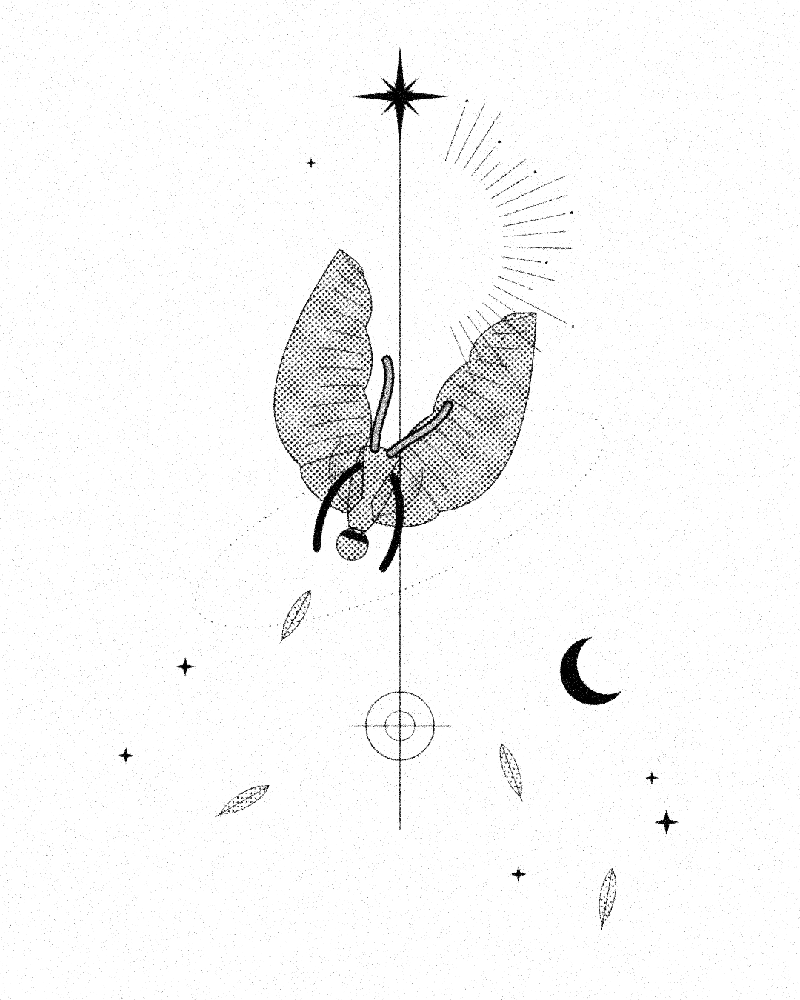

Ascent Through Fall
Nobody warns you that falling is mostly quiet: the wind goes soft, the light stays above, and for a long while you are only a shape the sky lets go. But feathers keep their own counsel, and somewhere past the halfway mark they turn, catch, and carry you up again.
A fall is a line drawn from the star to the target. Read it top to bottom and it is an ending; read it bottom to top and it is the same line, going the other way.
A study after Visual_Nest